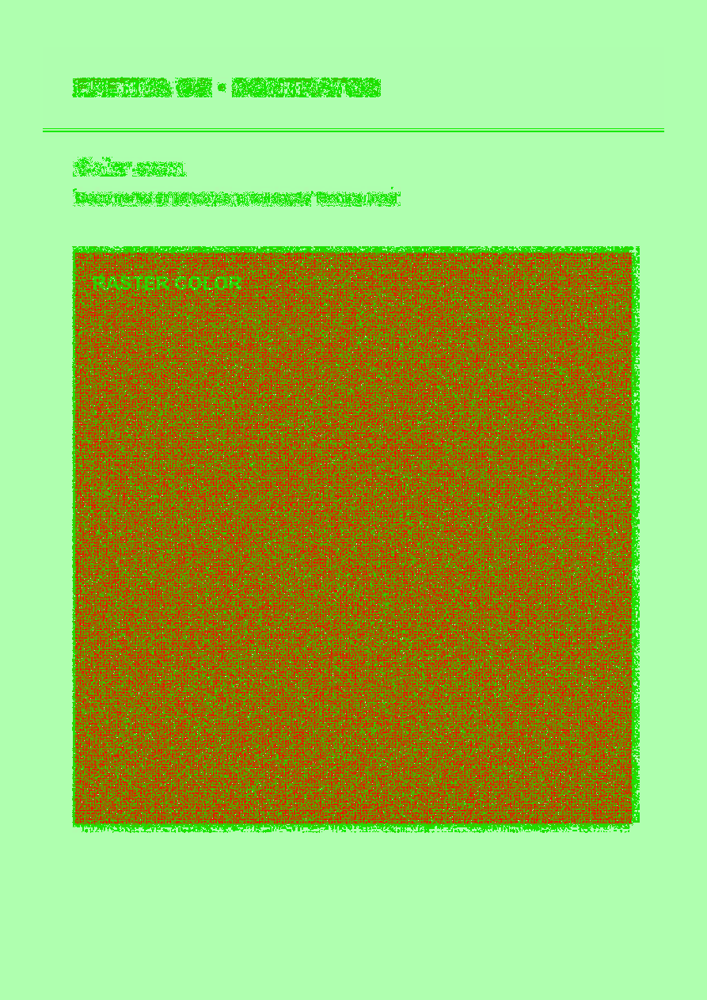
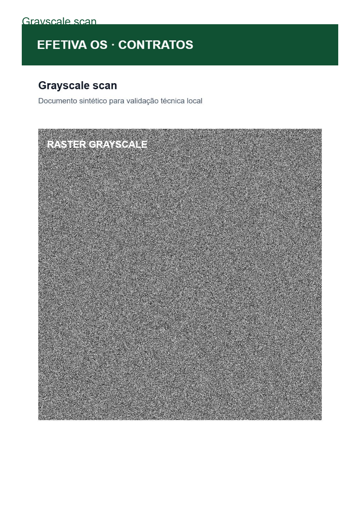
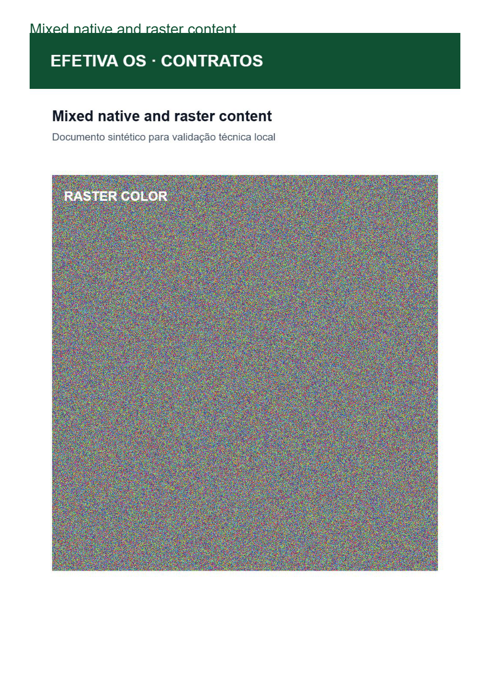
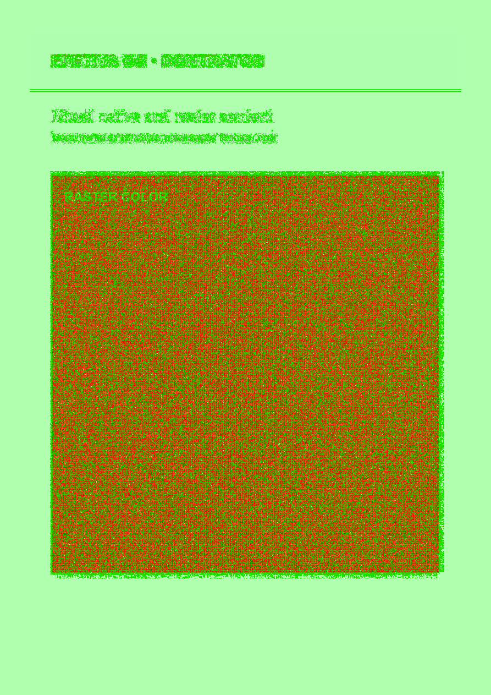

Native text and tables
Status: unchanged · páginas 1 → 1 · original 1312 bytes · final 1312 bytes · economia 0.00% · pixels alterados 0.00% · delta médio 0.00 · delta máximo 0
Nenhuma imagem obteve economia segura; o original foi preservado.


Documentos sintéticos renderizados dos PDFs original e resultante pelo mesmo PDF.js/Chromium, escala 1.5. A aprovação visual humana permanece PENDING.
Status: unchanged · páginas 1 → 1 · original 1312 bytes · final 1312 bytes · economia 0.00% · pixels alterados 0.00% · delta médio 0.00 · delta máximo 0
Nenhuma imagem obteve economia segura; o original foi preservado.
Status: optimized · páginas 1 → 1 · original 1244997 bytes · final 577678 bytes · economia 53.60% · pixels alterados 47.60% · delta médio 23.49 · delta máximo 215



Status: optimized · páginas 1 → 1 · original 1241095 bytes · final 538229 bytes · economia 56.63% · pixels alterados 10.26% · delta médio 1.50 · delta máximo 39



Status: unchanged · páginas 1 → 1 · original 1248484 bytes · final 1248484 bytes · economia 0.00% · pixels alterados 0.00% · delta médio 0.00 · delta máximo 0
PDF assinado digitalmente; o original foi preservado.


Status: optimized · páginas 1 → 1 · original 1247208 bytes · final 581967 bytes · economia 53.34% · pixels alterados 47.83% · delta médio 23.51 · delta máximo 215


